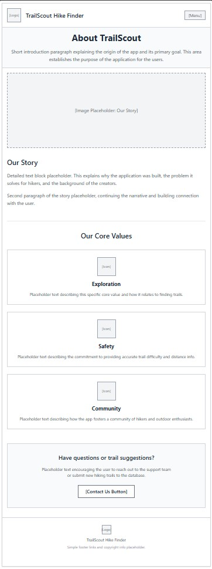
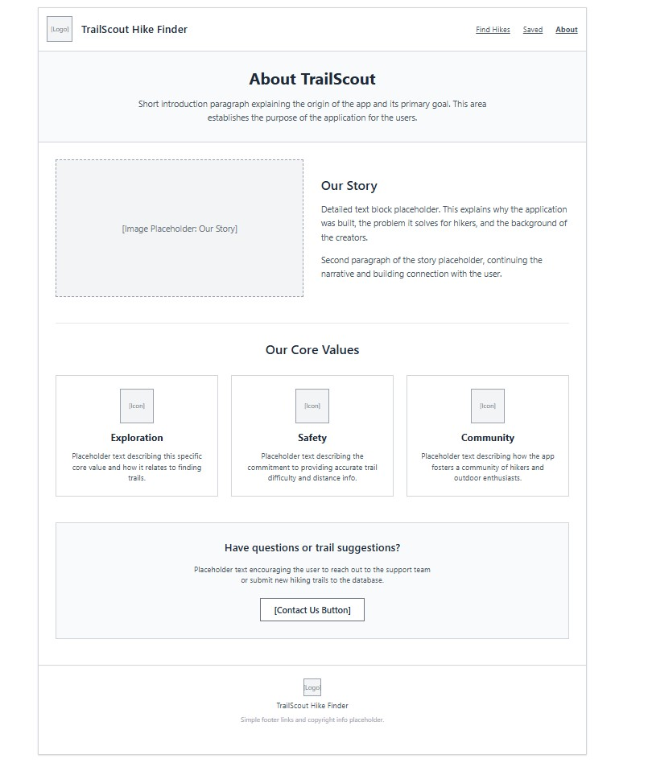

TrailScout Hike Finder will help users find hiking trails that match their preferred difficulty, distance, and trail type. Users will be able to browse available hikes, view important trail information, and filter the list to find an appropriate hike.
The intended audience includes beginner and experienced hikers who want a quick and simple way to compare local hiking trails. The app will be especially useful for people using a mobile device while planning an outdoor activity.
Each hike will include a trail name, trail image, location, difficulty level, distance, estimated hiking time, trail type, and a short trail description.
JavaScript will store trail information in an array of objects and display hikes by creating trail cards. Users will filter by difficulty, maximum distance, and trail type. Event listeners will respond to filter changes and search button clicks. Conditional statements and the filter() and forEach() array methods will determine and display matching hikes.
The app will include an array of hike objects, functions to create hike cards, filter hikes, and display a no-results message, DOM selection and modification, click and change event listeners, conditional statements, and filter() and forEach().
Create an array named hikes
For each hike:
Store the trail name
Store the location
Store the difficulty
Store the distance
Store the estimated time
Store the trail type
Store the image
Store the description
Create a function named displayHikes
Inside displayHikes:
Select the hike results container
Clear the current results
If the hike list is empty:
Display a message that says no hikes were found
Otherwise:
Loop through the hike list
Create a card for each hike
Add the trail information to the card
Add the card to the results container
Create a function named filterHikes
Inside filterHikes:
Read the selected difficulty
Read the selected maximum distance
Read the selected trail type
Filter the hikes array
For each hike:
Check whether the difficulty matches
Check whether the distance is within the selected limit
Check whether the trail type matches
If all selected requirements match:
Include the hike in the filtered results
Send the filtered hikes to displayHikes
When the user clicks the search button:
Run filterHikes
When the user clicks the reset button:
Reset all filter selections
Display every hike
When the page first loads:
Display every hike
| Primary | Secondary | Accent 1 | Accent 2 |
|---|---|---|---|
Forest Green is used for headers, buttons, and navigation. Light Sage is used for section backgrounds and cards. Charcoal is used for text and borders. Warm Cream is used for the main page background.
Heading Font: Roboto Slab
Paragraph Font: Lato
TrailScout Hike Finder helps you discover the right hike for your next outdoor adventure.



